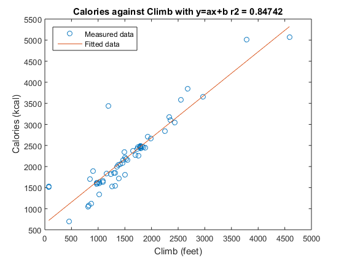
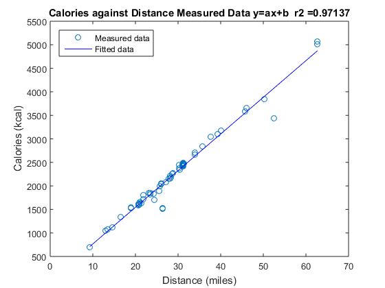
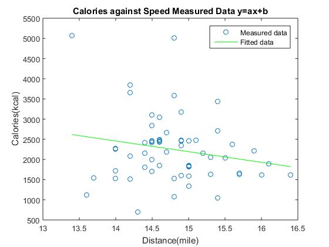

Contents
clc,clear;
GetRideData;
Part 1
disp('Part 1...................................Climb is independent')
xclimb = climb;
y1Calories = calories;
Mean_of_Climb = mean(climb);
Variance_of_Climb = var(climb);
disp(['Mean of Climb is ',num2str(Mean_of_Climb)])
disp(['Variance of Climb is ',num2str(Variance_of_Climb)])
disp('----------------------------------------------------------------')
Mean_of_Calories = mean(calories);
Variance_of_Calories = var(calories);
disp(['Mean of Calories is ',num2str(Mean_of_Calories)])
disp(['Variance of Calories is ',num2str(Variance_of_Calories)])
p=polyfit(xclimb,y1Calories,1);
a=p(1);
b=p(2);
disp(['a is ', num2str(a)]);
disp(['b is ', num2str(b)]);
yLfit1E1=a*xclimb+b;
n=numel(y1Calories);
Mean1E1 = sum(y1Calories)/n;
S1E1 = sum((y1Calories-Mean1E1).^2);
A1E1= sum((yLfit1E1-y1Calories).^2);
r21E1 = 1-A1E1/S1E1;
pp=polyfit(xclimb,log(y1Calories),1);
d=pp(1);
C=exp(pp(2));
disp(['C is ', num2str(C)]);
disp(['d is ', num2str(d)]);
yLfitE12=C*exp(d*xclimb);
Mean1E2 = sum(y1Calories)/n;
S1E2 = sum((y1Calories-Mean1E2).^2);
A1E2= sum((yLfitE12-y1Calories).^2);
r21E2 = 1-A1E2/S1E2;
figure(1)
plot(xclimb,y1Calories,'o',xclimb,yLfit1E1)
legend('Measured data','Fitted data','Location','northwest')
title(['Calories against Climb with y=ax+b', ' r2 = ', num2str(r21E1)])
xlabel('Climb (feet)')
ylabel('Calories (kcal)')
hold on
newCfeet = 6500;
newCal = a*newCfeet+b;
disp('********************************************************************')
disp(['At 6500 Climbing feet,', num2str(newCal), ' kcal is the Calories predicted by the choosen model: y=ax+b'])
Part 1...................................Climb is independent
Mean of Climb is 1573.0167
Variance of Climb is 562794.3556
----------------------------------------------------------------
Mean of Calories is 2249.15
Variance of Calories is 689450.9432
a is 1.0189
b is 646.4203
C is 1105.7362
d is 0.00041186
********************************************************************
At 6500 Climbing feet,7269.2 kcal is the Calories predicted by the choosen model: y=ax+b

Part 2
disp('********************************************************************')
disp('********************************************************************')
disp('Part 2...................................Distance is independent')
xdistance=distance;
y2calories=calories;
pL=polyfit(xdistance,y2calories,1);
a2=pL(1);
b2=pL(2);
yLfit2E1calories=a2*xdistance+b2;
disp('For Part 2')
disp(['a is ', num2str(a2)]);
disp(['b is ', num2str(b2)]);
p3=polyfit(log(xdistance),log(y2calories),1);
f=p3(1);
G=exp(p3(2));
yLfit2E2 = G*(distance.^f);
disp('----------------------------------------------------------------')
disp('For Part 2')
disp(['G is ', num2str(G)]);
disp(['f is ', num2str(f)]);
n=numel(y2calories);
Mean2E1 = sum(y2calories)/n;
S2E1 = sum((y2calories-Mean2E1).^2);
A2E1= sum((yLfit2E1calories-y2calories).^2);
r22E1 = 1-A2E1/S2E1;
Mean2E2 = sum(y2calories)/n;
S2E2 = sum((y2calories-Mean2E2).^2);
A2E2= sum((yLfit2E2-y2calories).^2);
r22E2 = 1-A2E2/S2E2;
figure(2)
plot(xdistance,y2calories,'o',xdistance,yLfit2E1calories,'b')
legend('Measured data','Fitted data','Location','northwest')
title(['Calories against Distance Measured Data y=ax+b ','r2 =', num2str(r22E1)])
xlabel('Distance (miles)')
ylabel('Calories (kcal)')
hold on
********************************************************************
********************************************************************
Part 2...................................Distance is independent
For Part 2
a is 77.945
b is -13.8536
----------------------------------------------------------------
For Part 2
G is 78.1008
f is 0.99695

Part 3
disp('********************************************************************')
disp('********************************************************************')
disp('Part 3...................................Speed is independent')
xspeed=speed;
y3calories=calories;
pL3=polyfit(xspeed,y3calories,1);
a3=pL3(1);
b3=pL3(2);
yLfit3E1calories=a3*xspeed+b3;
disp('For Part 3')
disp(['a is ', num2str(a3)]);
disp(['b is ', num2str(b3)]);
Mean_of_Speed = mean(speed);
Variance_of_Speed = var(speed);
disp(['Mean of Speed is ',num2str(Mean_of_Speed)])
disp(['Variance of Speed is ',num2str(Variance_of_Speed)])
disp('----------------------------------------------------------------')
Mean_of_Calories = mean(calories);
Variance_of_Calories = var(calories);
disp(['Mean of Calories is ',num2str(Mean_of_Calories)])
disp(['Variance of Calories is ',num2str(Variance_of_Calories)])
figure(3)
plot(xspeed,y3calories,'o',xspeed,yLfit3E1calories,'g')
legend('Measured data','Fitted data','Location','northeast')
title('Calories against Speed Measured Data y=ax+b')
xlabel('Distance(mile)')
ylabel('Calories(kcal)')
hold on
********************************************************************
********************************************************************
Part 3...................................Speed is independent
For Part 3
a is -264.3182
b is 6157.5344
Mean of Speed is 14.7867
Variance of Speed is 0.3727
----------------------------------------------------------------
Mean of Calories is 2249.15
Variance of Calories is 689450.9432
